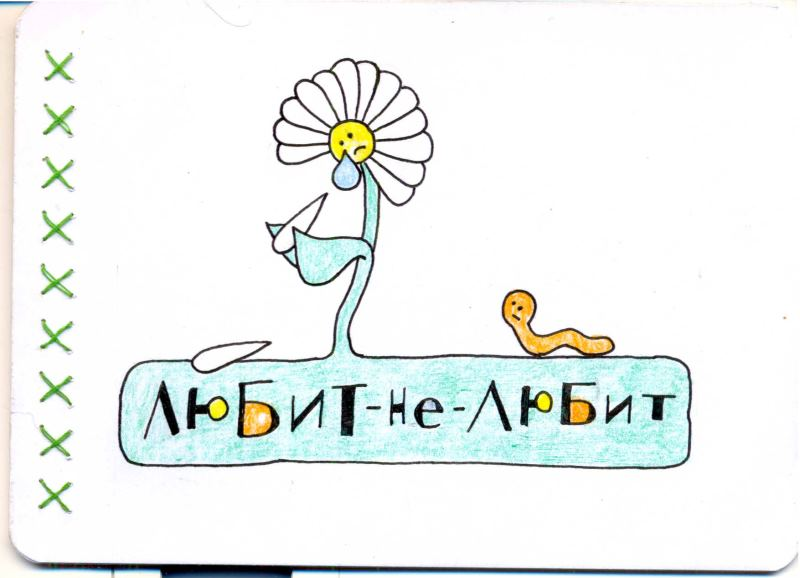
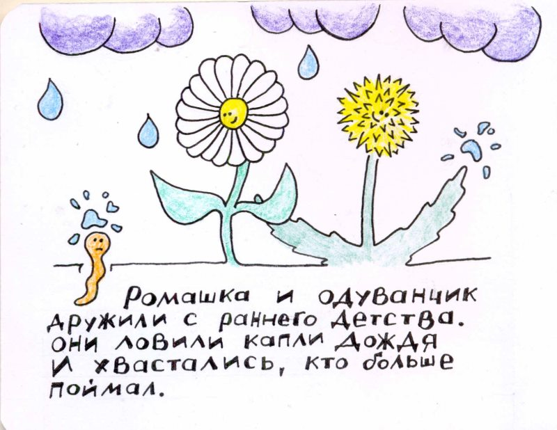
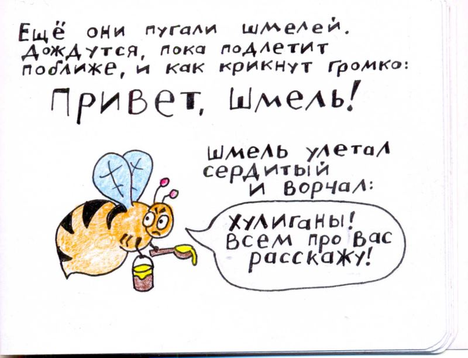
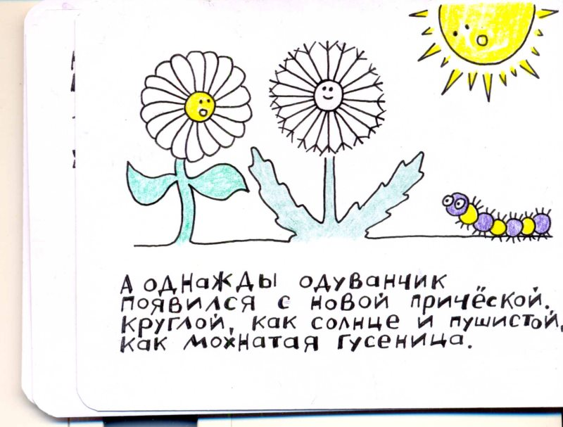
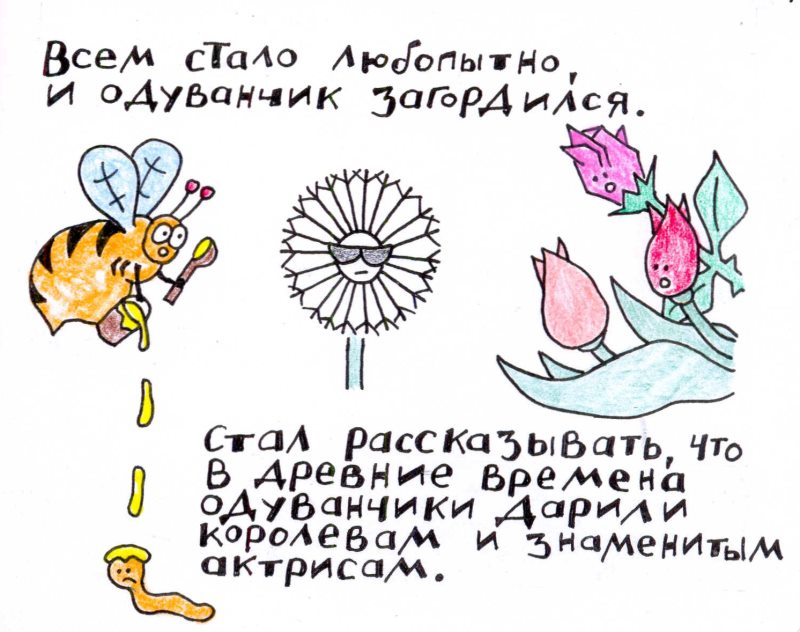
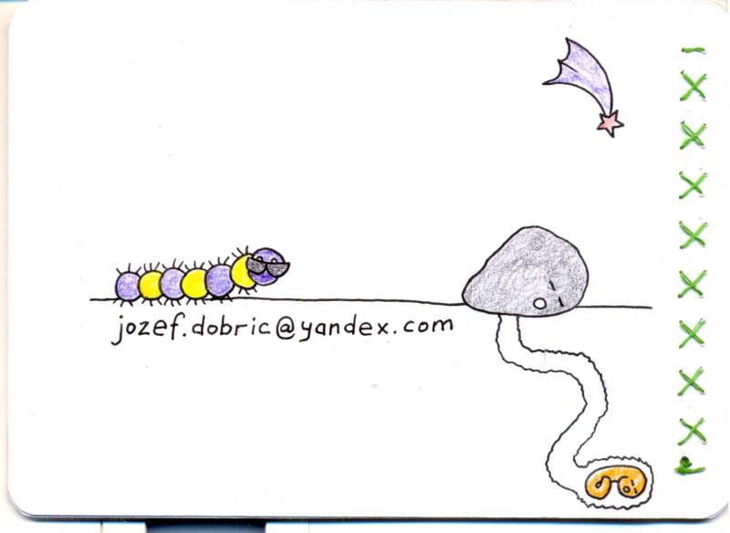

Любит не любит
(классическая версия с комментариями автора)
Шикарнейшие книжки о безграничной любви полевых цветов.
Каждый экземпляр рисовался вручную и имел свою собственную историю. Кто-то рисовался на горных вершинах. Кто-то в марсельских подворотнях. Была даже книжка, половина которой нарисована в баварской тюрьме.
Вот такие интересные времена были. А сейчас, ведь, еще интереснее!

На обложку книги вынесен ключевой персонаж истории — ромашка — в классической позе грусти. Так-же, вынесен ключевой червь.
С левой стороны можно заметить следы крепления страниц. Древний метод нитки и иголки придает книге шарм.
Но обложка это только затравка (см. следующую страницу).

История начинается со знакомства. Главные персонажи книги — ромашка и одуванчик — предстают перед нами в ярких, позитивных красках беззаботной жизни.
Пол персонажей нигде явно не указан (это же цветы, у них тычинки и пестики). Но наметанному глазу это не проблема.
В контраст жизнерадостным главным персонажам, на первой странице появляется серый кардинал истории — червь. Ему не везет.

Появление шмеля в сюжете ознаменовано произнесением ключевого слова: хулиганы!
Именно с этого момента перед зрителем начинает открываться острый сюжет.

С четвертой страницы начинается знакомство со второстепенными персонажами.
И хотя их общее смысловое значение не выходит за рамки определения толпы (в книге используется фраза *все вокруг*), каждый их них является проработанной уникальной личностью.

Продолжается знакомство с персонажами. Помимо набивших оскомину тюльпанов зритель знакомится со всеми любимым камнем, и божьей коровкой.
Коровка — персонаж появившийся лишь в поздних изданиях книги. Смысл персонажа будет скрыт до самой последней страницы. А прототипом персонажа была настоящая божья коровка, пролетавшая мимо. В декабре месяце, ага.
Вновь появляется червь. На этот раз он не может выбраться наружу, поскольку над туннелем спит камень. Не то, чтобы червь совсем тупой, но что-то такое в нем есть.

Появление у одуванчика новой прически - ключевое событие истории. Такое ключевое, что появления гусеницы и солнца отходят на задний фон.
Как часто мы, меняя что-то в своей внешности, начинаем себя чувствовать как-то возвышенно, воодушевленно!
Стоит сказать, что в адулт-версии книги роль одуванчика играет женский персонаж. И вместо новой прически у нее появляется грудь.
Но то адулт-версия, а здесь у нас все очень мило и душевно.

Черные очки на одуванчике символизируют гордыню.
Мед на голове червя символизирует суть червя.
Все остальное символизирует удивленную толпу.

Именно этот кадр, с плачущей ромашкой в порыве гадания, вынесен на обложку книги. Рисунок восхитительный сам по себе, даже в отрыве от контекста.
Уже два человека нашли себя в облике этой ромашки.
Редкий случай, когда на страницу книги частично переносится изображение с соседней страницы. Летящие сквозь книжный переплет перья одуванчика, как нельзя кстати, передают ощущение ветра (см. следующую страницу).

Ветер...
Ветер, как символ того, что может случиться.
Ветер, как символ того, что может испортить прическу.
Ветер, как символ всего вселенского зла.
Ветер, как символ несчастий червя.
И вы услышали смех толпы? Очень тонкая философия. Очень!
Ведро и ложка выпали из лап шмеля не просто так - его лапы потребуются нам для чего-то совершенно иного (см. следующую страницу).

Даже не знаю что сказать в такой трогательный момент...
Три сердечка над головой ромашки, символизирует любовь к
— цветку,
— стеблю
— и к корням одуванчика. Так у цветов принято.
Червь остается червем даже в радостные моменты. А вот шмель-херувим в предыдущих изданиях книги не появлялся.
Прототипом шмеля-херувима, послужил старый рокер Норберт из Франхенштайенмайера (как-то так). Который в процессе работы над книжкой говорил: смотри ей в глаза, и ты увидишь чего она хочет. Тот еще херувим.

Хеппи энд, как в лучших домах Парижа и Лондона.
Ромашка и одуванчик снова вместе. Они лысые.
Раскрывается суть божьей коровки. Суть божьей коровки — коровий зигзаг.
Аист в северо-западном углу страницы, приносит в клюве недвусмысленный намек.
У всех всё хорошо.
Даже у червя (см. на следующей странице).

Париж, осень 2011